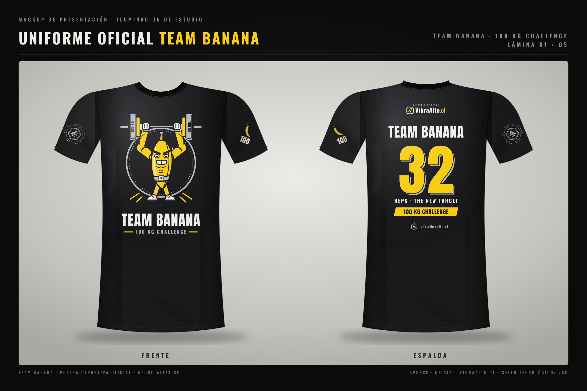
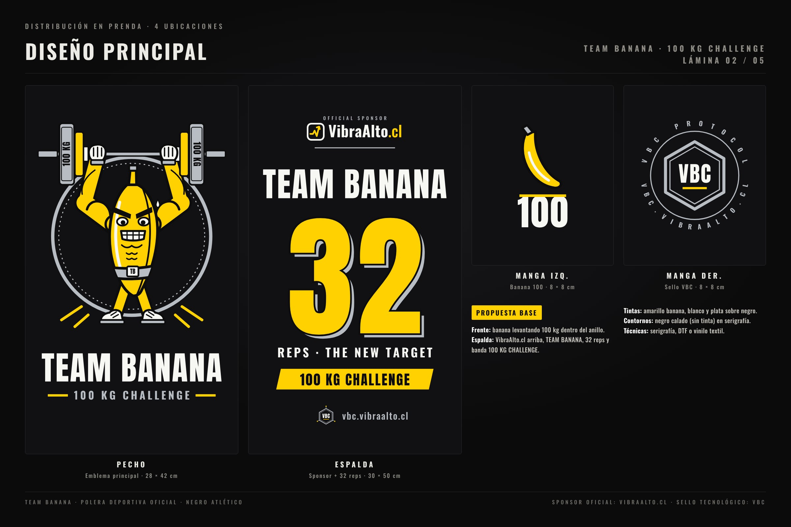
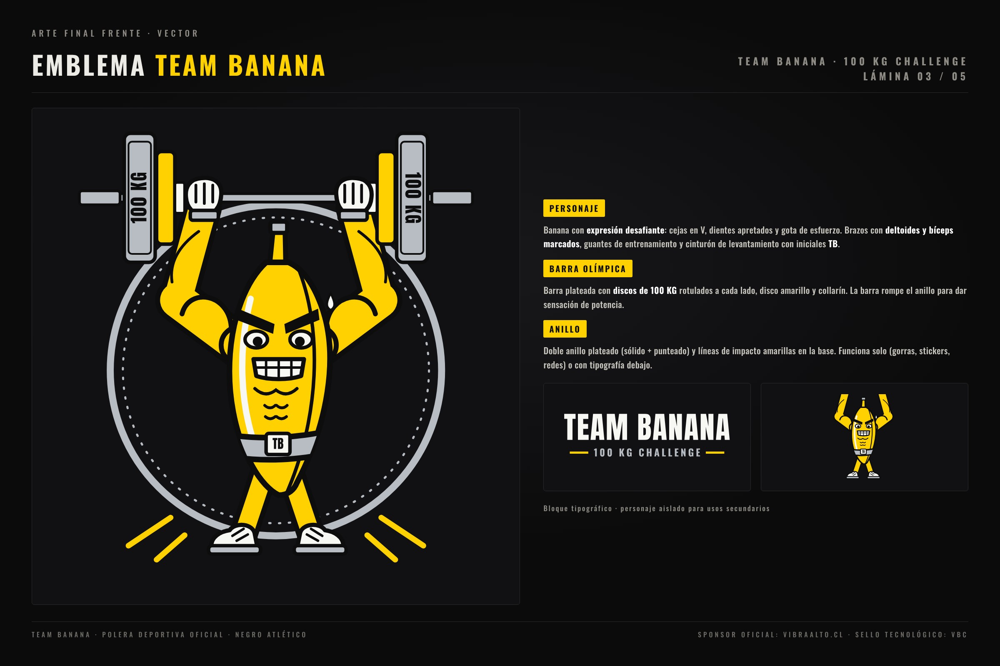
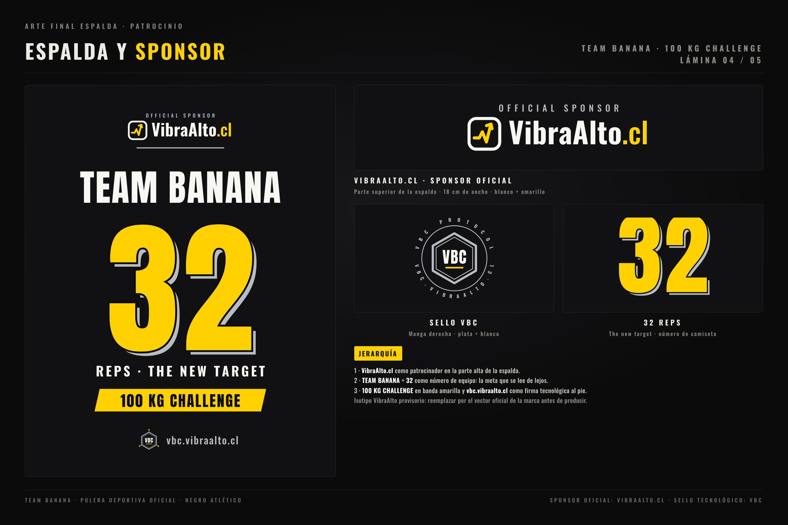
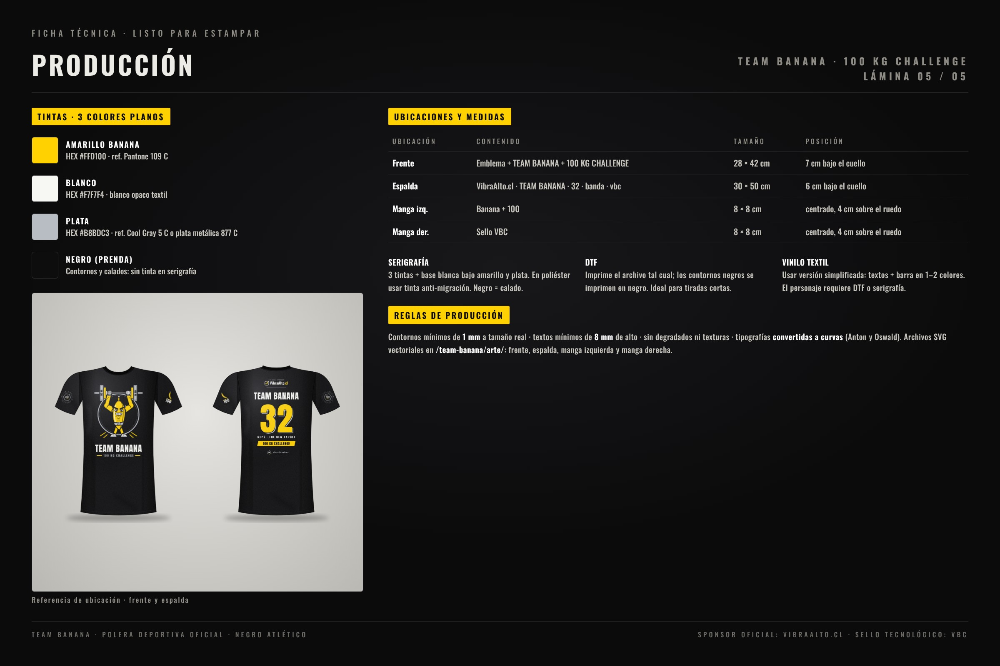

Sponsor oficial: VibraAlto.cl · Sello tecnológico: VBC
Team Banana
· 100 kg challenge
01 Mockup
02 Diseño
03 Emblema
04 Espalda
05 Producción

Lámina 01
· Mockup frente y espalda

Lámina 02
· Diseño principal · 4 ubicaciones

Lámina 03
· Emblema frontal

Lámina 04
· Espalda y sponsor

Lámina 05
· Ficha de producción
Archivos vectoriales (SVG, textos en curvas):
Frente
Espalda
Manga izq.
Manga der.
Emblema